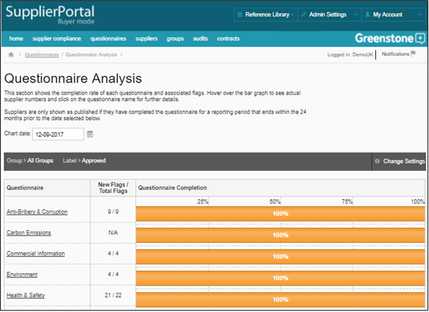

In order for the Supplier compliance dashboard to function properly you will need to have uploaded your master list of suppliers (see Supplier Master List) and enabled the self-assessment functionality either manually (see Self-Assessments) or through automatically through the master list upload.
The questionnaire analysis dashboard shows the completion rates of each questionnaire and any flags raised by Supplier responses. You can hover over the bar graph or click on the questionnaire title for further information.
The individual questionnaire screen is accessed by clicking on one of the questionnaire titles. It shows the status of that questionnaire and provides a table of Suppliers that can be filtered and exported.
